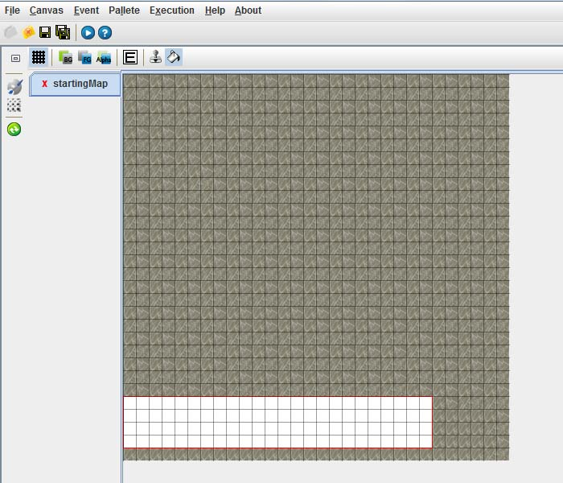

Step 2-1. 맵 작성의 시작
- 새 프로젝트와 1개의 맵 작성 준비가 완료됨
처음 프로젝트를 생성하고 맵을 그릴 캔버스를 작성하면 위와 같은 화면을 볼수 있습니다.
이제 여기에 맵을 그려 보도록 합니다!
타일 셋 탭의 구성
화면의 오른쪽을 보면 타일 셋 탭이 있습니다.
타일셋은 전경(Foreground) 와 후경(Background)로 나눠져 있으며
- 후경 타일셋
위 화면에서는 지금 후경이 선택 되어 있습니다.
버튼을 보시면 왼쪽 부터
그리드 모드 : 타일셋을 블록 단위로 구별하여 보이도록 합니다.
전경 : 전경에 해당하는 타일셋을 볼 수 있습니다.
후경 : 후경에 해당하는 타일셋을 볼 수 있습니다.
이동가능 : 타일셋에서 캐릭터들이 이동가능한 지역을 설정합니다.
캐릭터보다 위 전경 선택 : 후경에서는 설정하지 못합니다. 이것은 전경 중에서도
캐릭터 보다 위에 출력될 전경을 설정합니다.
간단하게 설명했습니다.
실제로 사용 하면서 익혀 봅시다.
일단 후경을 그린 후 전경을 그리도록 하겠습니다.
첫번째 버튼인 그리드 모드를 선택하여 블록 단위로 보도록 하겠습니다.
그리고 TileBack4.png를 선택합니다.
- TileBack4.png에서 X:6 Y:14 에서 시작하여 4칸을 드래그하여 선택
타일셋에서 4블록을 선택하였습니다. 위치는 X:6 Y:14 부터 X:7 Y:15 까지 입니다.
화면 아래쪽 바를 보면 현재 좌표가 나와있습니다.
타일셋 아래쪽, 전체와면에서 오른쪽 아래 구석일 보면 이렇게 나와 있습니다.
현제 타일셋(=팔레트)에서 2 X 2 즉, 4개의 블록이 선택 되었으며
현재 마우스가 타일셋의 (7, 15) 위치에 있다는 것을 나타냅니다.
스크린샷에느 아쉽게도 마우스 포인터가 찍히지 않았지만 실제로는 (7,15)에
포인터가 위치해 있습니다.
맵에 그리기
그리고 싶은 타일 셋을 선택 했으면 이제 맵에 그릴 차례입니다.
선택한 타일셋을 맵에 그리는 방법은 2가지가 있습니다.
캔버스 위쪽의 메뉴를 설명하면서 함께 설명하겠습니다.
왼쪽 부터 순서대로
그리드 : 캔버스를 블록단위로 구별되게 보여줍니다.
후경만 보기 : 캔버스에 그려진 후경만 보여줍니다
전경만 보기 : 캔버스에 그려진 전경만 보여줍니다.
전경과 후경 구별하여 보기 : 후경은 어둡게 전경은 밝게 하여 보여줍니다.
이벤트 모드 : 맵에서 일어나는 이벤트들을 설정합니다.
도장(스탬프) : 타일셋에서 선택한 타일을 캔버스에 도작 찍듣이 그립니다.
페인트 : 타일셋에서 선택한 타일을 캔버스에 영역을 선택하여 전부 그립니다.
현재는 도작이 선택되어 있습니다. 그리드 모드를 선택하여 블록단위로 보이도록
페인트를 선택하여 선택한 타일을 맵에 그려넣도록 하겠습니다.
- 맵 전체를 선택
캔버스 역시 마우스를 올려 놓으면 화면 오른쪽 아래 구석에 마우스 좌표가 표시 됩니다.
타일셋(=팔레트)의 경우와 마찬가지로 캔버스도 영역을 선택하면 선택한 영역의 크기가
아래쪽 상태바에 이렇게 나타납니다.
(1,1) 부터 (30, 30) 까지 드래그 하여 선택합니다. 붉은 선으로 선택된 곳이 표시 됩니다.
전부 선택하여 드래그를 끝내면 선택한 구역에 타일셋에서 선택한 부분이 그려집니다.
- 캔버스에 타일셋이 그려짐
잘못 그려서 지우고 싶을 경우
지우개를 사용하기 위해서는 후경 타일셋 탭의 첫번째 탭(Background)를 선택합니다.
이곳에는 전부 비어있는 타일셋입니다. 필요한 지우개의 크기만큼 선택하여
캔버스에 그려주면 그 부분이 지워지게 됩니다.

- 지우개를 이용하여 해당 부분을 지움
저장하기
도구바에 있는 맵 저장 버튼() 이나 File->Save Map, 혹은 단축키 Ctrl+S를 누르면 해당 맵이 저장 됩니다.
중간 중간 저장하여 주도록 합시다.
이상으로 맵에 타일셋을 그려봤습니다!
2-2 장에서는 후경에 이동 불가 지역을 생성해 보도록 하겠습니다.
|